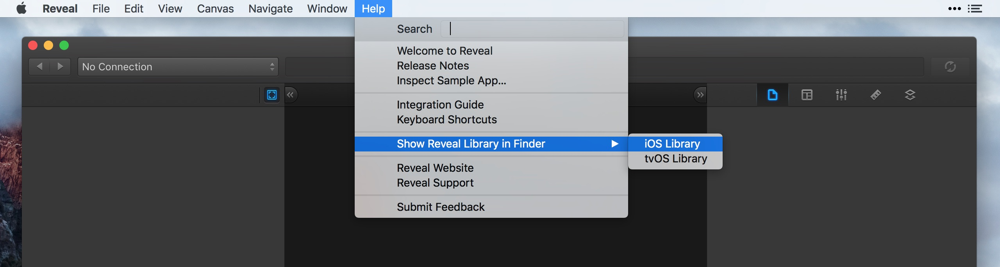
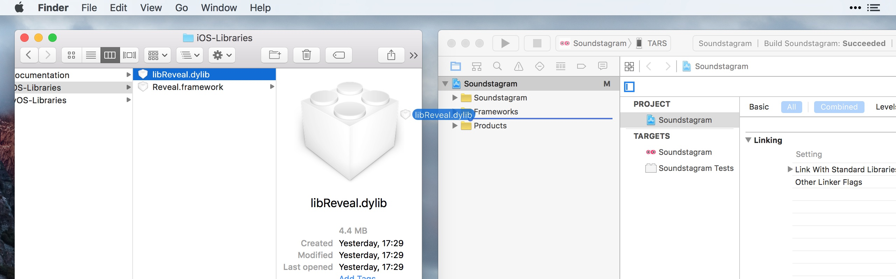
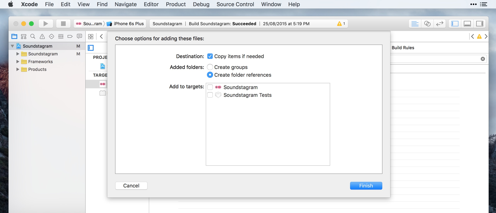
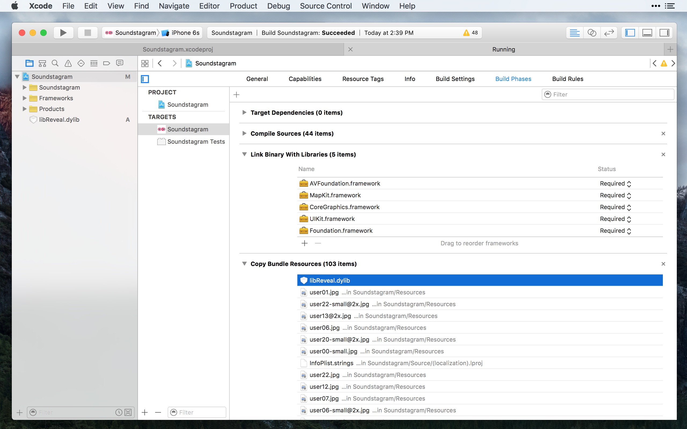
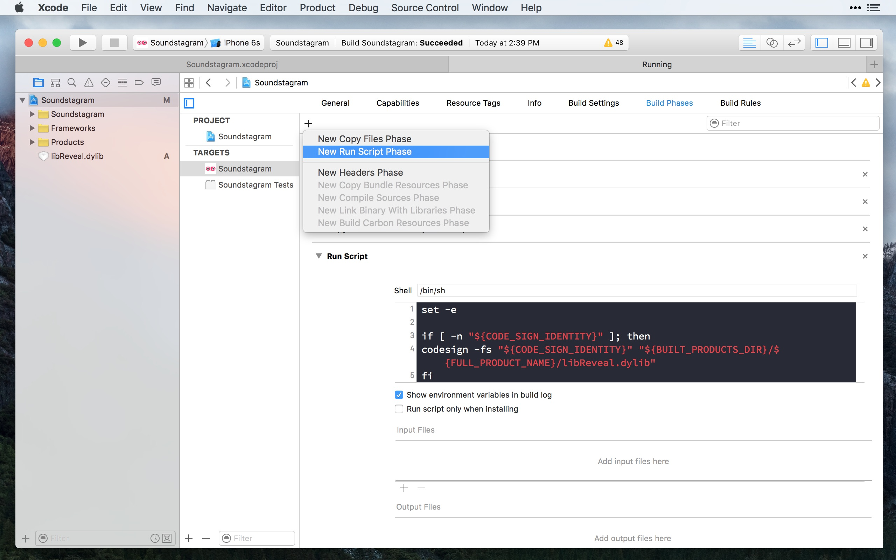
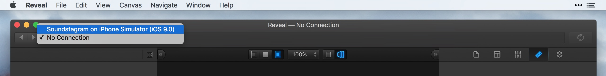

将Reveal加入您的Xcode工程，使得您团队中的其他成员无需任何额外的配置，就可以使用Reveal。
警告: 永远不要将包含Reveal动态库文件的应用正式发布。Apple不允许将含有动态加载库文件的iOS应用发布到Apple商店中。
在Xcode中打开您的iOS工程。
启动Reveal并选择Help → Show Reveal Library in Finder，这将会打开Finder窗口，并显示一个名为iOS-Libraries的文件夹。

将 libReveal.dylib 文件拖入Xcode中的Project Navigator面板。

在下图所显示的Add to targets对话框中，反选所有的target。这确保了Xcode不会在编译时连接动态库文件。可选步骤：选中Copy items if needed，将会把 libReveal.dylib 拷贝到工程中——如果您这么做了， 请记住，当更新Reveal至新版本时，也依照上述步骤再次更新此库文件。

点击Finish。
在Xcode的Project Navigator中，选中您的工程，然后将以下步骤应用在所有您希望适配Reveal的target之上：

在Copy Bundle Resources配置区域中，加入libReveal.dylib。
在Link Binary With Libraries配置项中：
为了能在debugger之外，将库文件动态地载入设备上的应用，您需要在构建过程中加入对libReveal.dylib文件的code sign。

进入target的Build Phases标签页，选择Editor → Add Build Phase → Add Run Script菜单。在Run Script阶段中加入以下内容:
set -e
if [ -n "${CODE_SIGN_IDENTITY}" ]; then
codesign -fs "${CODE_SIGN_IDENTITY}" "${BUILT_PRODUCTS_DIR}/${FULL_PRODUCT_NAME}/libReveal.dylib"
fi将下面的代码加入到项目中合适的类文件中(例如您的UIApplicationDelegate)，适当修改使之满足您的需要：
Swift:
// MARK: - Reveal
func loadReveal() {
if NSClassFromString("IBARevealLoader") == nil {
let revealLibName = "libReveal" // or "libReveal-tvOS" for tvOS targets
let revealLibExtension = "dylib"
var error: String?
if let dylibPath = NSBundle.mainBundle().pathForResource(revealLibName, ofType: revealLibExtension) {
print("Loading dynamic library \(dylibPath)")
let revealLib = dlopen(dylibPath, RTLD_NOW)
if revealLib == nil {
error = String(UTF8String: dlerror())
}
} else {
error = "File not found."
}
if error != nil {
let alert = UIAlertController(title: "Reveal library could not be loaded",
message: "\(revealLibName).\(revealLibExtension) failed to load with error: \(error!)",
preferredStyle: .Alert)
alert.addAction(UIAlertAction(title: "OK", style: .Default, handler: nil))
UIApplication.sharedApplication().windows.first?.rootViewController?.presentViewController(alert, animated: true, completion: nil)
}
}
}Objective-C:
#import
#pragma mark - Reveal
- (void)loadReveal
{
if (NSClassFromString(@"IBARevealLoader") == nil)
{
NSString *revealLibName = @"libReveal"; // or @"libReveal-tvOS" for tvOS targets
NSString *revealLibExtension = @"dylib";
NSString *error;
NSString *dyLibPath = [[NSBundle mainBundle] pathForResource:revealLibName ofType:revealLibExtension];
if (dyLibPath != nil)
{
NSLog(@"Loading dynamic library: %@", dyLibPath);
void *revealLib = dlopen([dyLibPath cStringUsingEncoding:NSUTF8StringEncoding], RTLD_NOW);
if (revealLib == NULL)
{
error = [NSString stringWithUTF8String:dlerror()];
}
}
else
{
error = @"File not found.";
}
if (error != nil)
{
NSString *message = [NSString stringWithFormat:@"%@.%@ failed to load with error: %@", revealLibName, revealLibExtension, error];
UIAlertController *alert = [UIAlertController alertControllerWithTitle:@"Reveal library could not be loaded"
message:message
preferredStyle:UIAlertControllerStyleAlert];
[alert addAction:[UIAlertAction actionWithTitle:@"OK" style:UIAlertActionStyleDefault handler:nil]];
[[[[[UIApplication sharedApplication] windows] firstObject] rootViewController] presentViewController:alert animated:YES completion:nil];
}
}
} 警告: 不要在发布（release）构建中调用此方法，确保仅是在应用的调试（debug）构建中加载libReveal.dylib。
一个简单的集成方式是，在-[UIApplicationDelegate applicationDidBecomeActive:]方法中调用上面声明的- (void)loadReveal方法，以确保Reveal库尽早地被加载进来。
Swift:
func applicationDidBecomeActive:(application: UIApplication) {
self.loadReveal()
}Objective-C:
- (void)applicationDidBecomeActive:(UIApplication *)application
{
[self loadReveal];
}> **提示**: 在`-[UIApplicationDelegate applicationDidBecomeActive:]`方法返回之前加载库的一个好处是，将会让Reveal服务在应用启动的同时也自动启动。
如果您不希望如上述步骤自动启动Reveal服务，也可以以手动的方式来启动，例如通过一个Debug按钮。在应用启动后，自己调用loadReveal方法，然后再分发一个名为IBARevealRequestStart的NSNotification:
Swift:
func startReveal() {
NSNotificationCenter.defaultCenter().postNotificationName("IBARevealRequestStart", object: nil)
}Objective-C:
- (void)startReveal
{
[[NSNotificationCenter defaultCenter] postNotificationName:@"IBARevealRequestStart" object:nil];
}在Xcode中，选择基于Debug配置的scheme，构建并运行您的应用。

如果一切正常运行，请切换到Reveal应用，此时您的应用应会出现在应用选择器的下拉列表当中。选中您的应用，确认可以看到此时正在模拟器（或设备）中运行的应用界面截图。
如果您遇到任何Reveal集成的相关问题，请移步至我们的支持站点來寻求帮助。